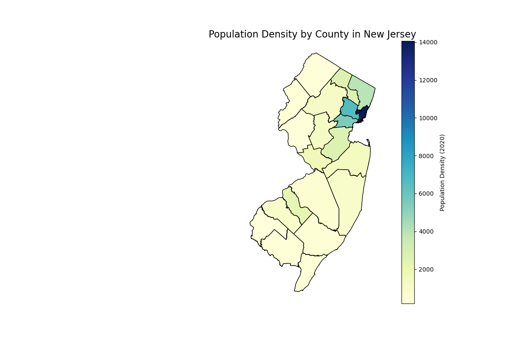
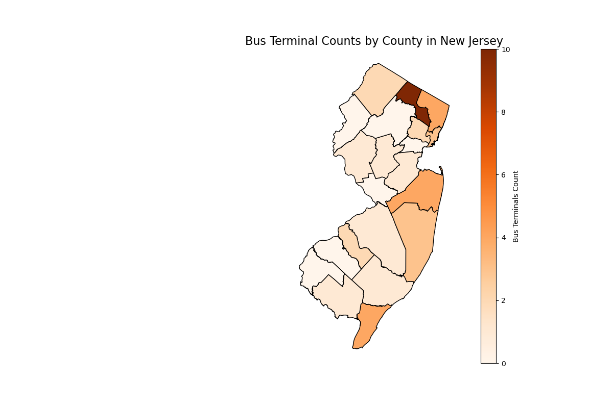

Author: Muhammad Haroon Ashfaq
34:816:651:90 SEM PUB INFORM
This project analyzes the relationship between New Jersey’s population density, bus terminal locations, and long-term care (LTC) facilities. Using a combination of static and interactive maps, the study examines the following key questions:
The maps presented aim to provide insights into transit accessibility and its spatial alignment with population and care facility needs.
This map visualizes population density across New Jersey counties, highlighting areas of higher residential concentration. The data is sourced from the 2020 U.S. Census and processed for geographic representation.
This map shows the number of bus terminals in each county. The terminal counts were derived using a spatial join operation between the bus terminal data and county boundaries.
This map shows all bus terminals in New Jersey with details such as name, municipality, and operator. Hover over a terminal for more information.
This map highlights areas within a 5-mile radius of bus terminals, providing insights into transit accessibility. It also overlays population density for comparative analysis.
This interactive map integrates bus terminals, LTC facilities, and population density. It provides a comprehensive view of the spatial relationship between these factors, aiding in understanding transit accessibility for vulnerable populations.
County Boundaries: This shapefile was sourced from the New Jersey GIS database. It includes boundaries for all counties in the state and provides the base geography for the analysis.
Bus Terminals: This dataset was obtained from NJ Transit and includes details about terminal names, locations, parking availability, and ticket-selling facilities. The data was cleaned and converted into a GeoDataFrame for mapping.
LTC Facilities: Provided by the NJ Department of Health, this dataset includes facility names and addresses. Latitude and longitude were derived for spatial mapping.
All datasets were processed using spatial joins, coordinate system transformations, and data cleaning steps to ensure compatibility for geospatial analysis.
The analysis consisted of the following steps:
The combination of static and interactive maps enables detailed exploration of these factors, providing valuable insights into New Jersey’s transit infrastructure and its accessibility for diverse population groups.